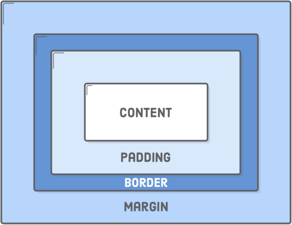

Structure, Phrasing and Display
Block elements create "larger" structures than inline elements. By default, block-level elements begin on new lines, but inline elements can start anywhere in a line. Basically, an inline element does not cause a line break (start on a new line) and does not take up the full width of a page, only the space bounded by its opening and closing tag. It is usually used within other HTML elements. A block-level element always starts on a new line and takes up the full width of a page, from left to right. A block-level element can take up one line or multiple lines and has a line break before and after the element.
Box Model
The “CSS box model“ is a set of rules that define how every web page on the Internet is rendered. CSS treats each element in your HTML document as a “box” with a bunch of different properties that determine where it appears on the page. So far, all of our web pages have just been a bunch of elements rendered one after another. The box model is our toolkit for customizing this default layout scheme. Content is the text, image, or other media content in the element. Padding is the space between the box’s content and its border. Border is the line between the box’s padding and margin. Margin is the space between the box and surrounding boxes.

Background Images
In order to put a simple image on a webpage, we use the  element. This is an empty element (meaning that it has no text content or closing tag) that requires a minimum of one attribute to be useful — src (sometimes spoken as its full title, source). The src attribute contains a path pointing to the image you want to embed in the page, which can be a relative or absolute URL, in the same way as href attribute values in elements. The CSS background-image property, and the other background-* properties, are used to control background image placement.
element. This is an empty element (meaning that it has no text content or closing tag) that requires a minimum of one attribute to be useful — src (sometimes spoken as its full title, source). The src attribute contains a path pointing to the image you want to embed in the page, which can be a relative or absolute URL, in the same way as href attribute values in elements. The CSS background-image property, and the other background-* properties, are used to control background image placement.